NO ROBUST CANDIDATE
1m trade OHLC proxy — not historical BBO, not executable backtest.
pair signal_count entered_count realized_count max_hold_count unresolved_count realized_rate unresolved_rate entry_decay_rate mean_net_account_price_pnl_bps median_net_account_price_pnl_bps win_rate median_holding_minutes mean_net_funding_account_bps mean_net_combined_account_pnl_bps
binance/bitget 130 114 99 0 15 0.8684 0.1316 0.1231 -17.5409 -17.6944 0.0 4.0 -0.0991 -17.6400
binance/gate 1 1 0 0 1 0.0000 1.0000 0.0000 NaN NaN NaN NaN NaN NaN
binance/okx 31 22 21 0 1 0.9545 0.0455 0.2903 -16.7753 -16.9047 0.0 30.0 -0.8173 -17.5926
bitget/gate 37 30 0 0 30 0.0000 1.0000 0.1892 NaN NaN NaN NaN NaN NaN
bitget/okx 69 66 50 0 16 0.7576 0.2424 0.0435 -17.1418 -17.1542 0.0 5.0 0.0000 -17.1418
gate/okx 0 0 0 0 0 NaN NaN NaN NaN NaN NaN NaN NaN NaN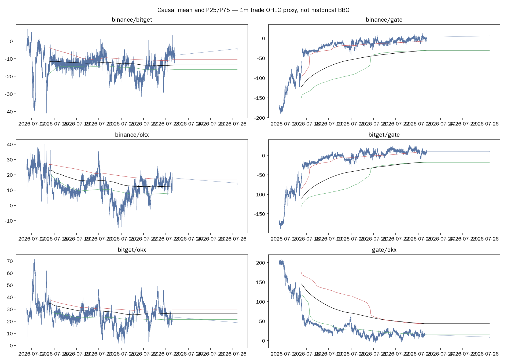
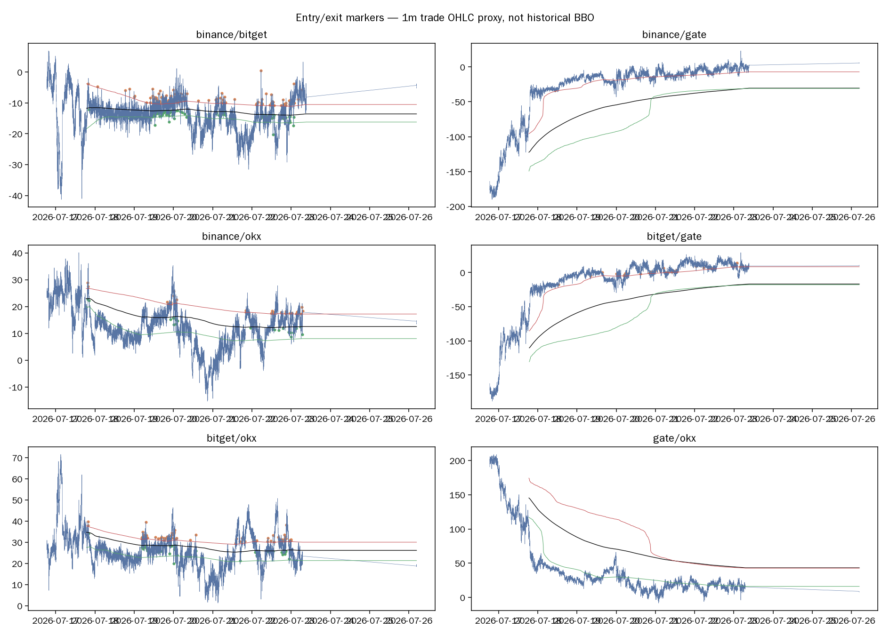
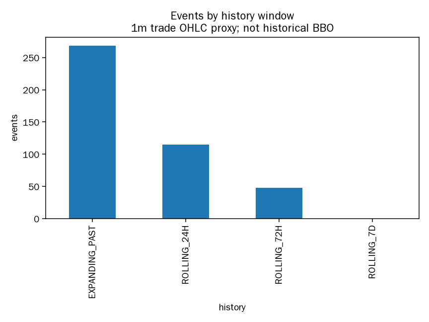
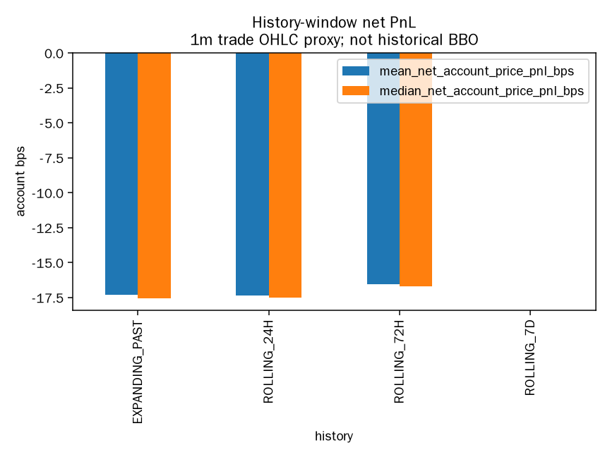
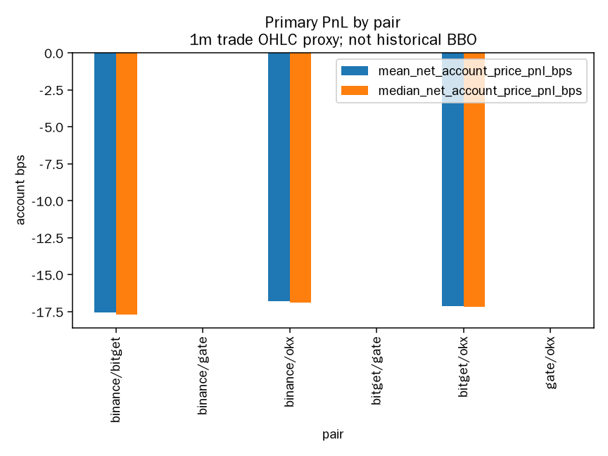
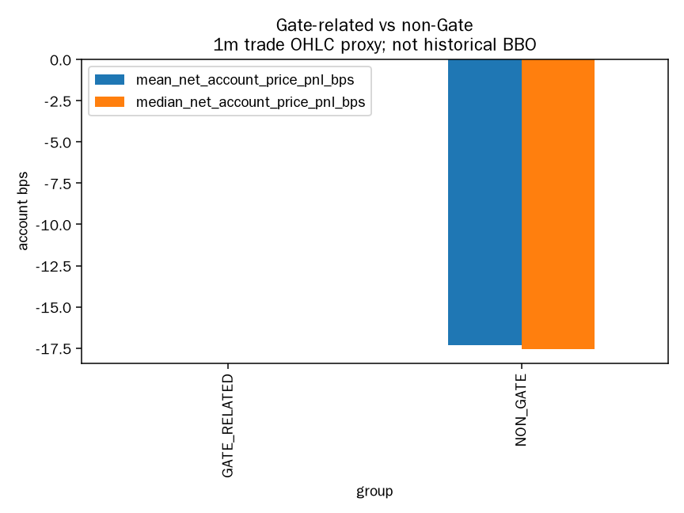
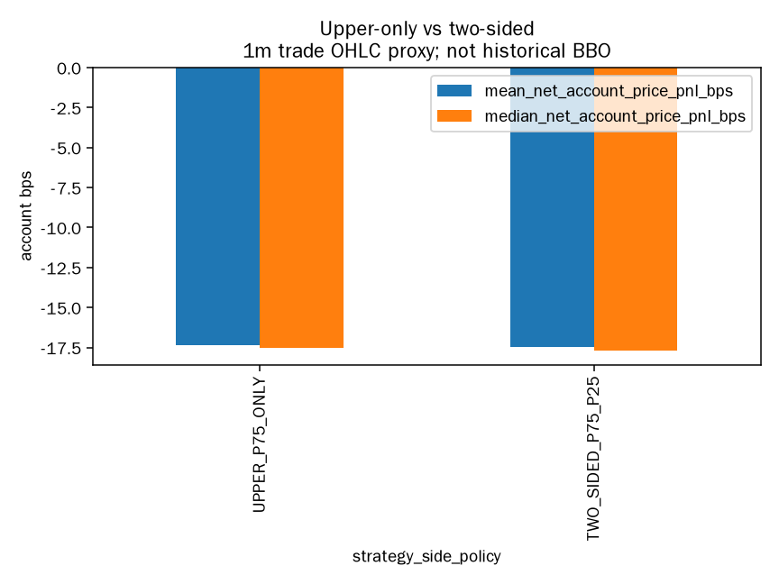
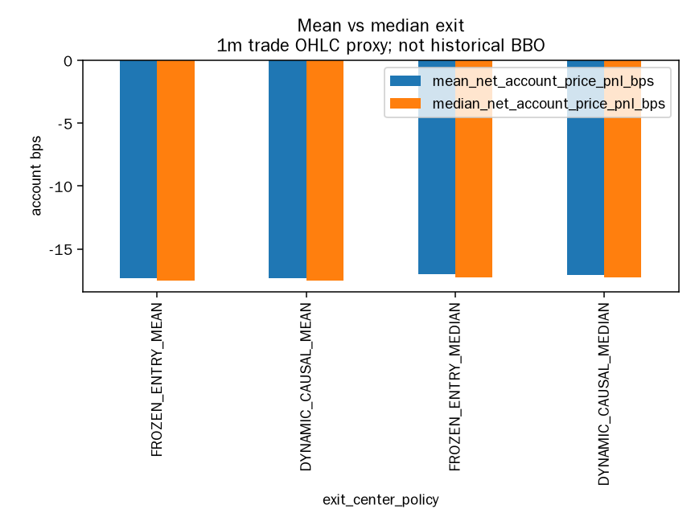
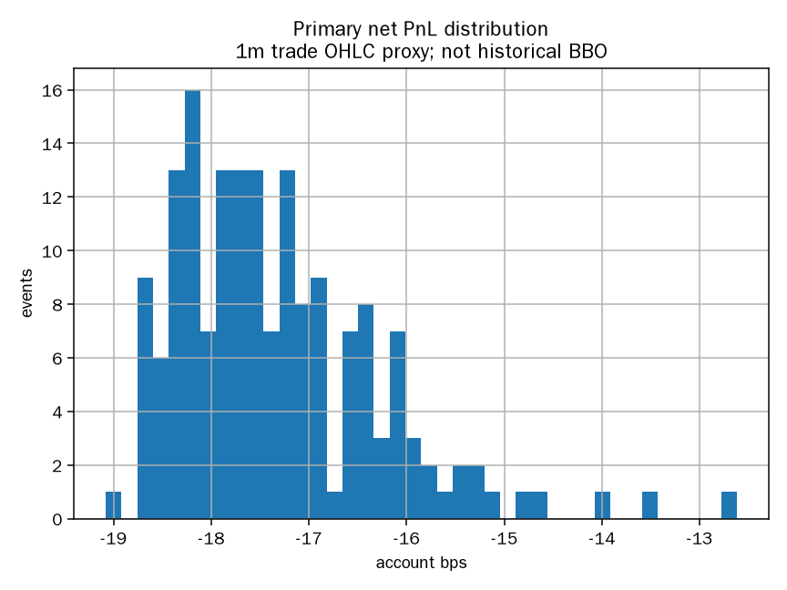
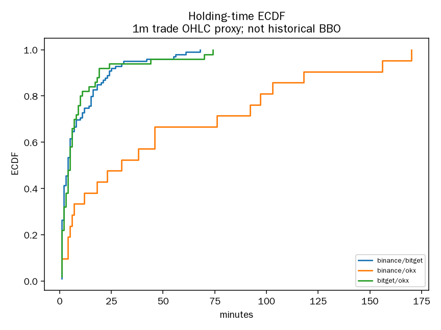
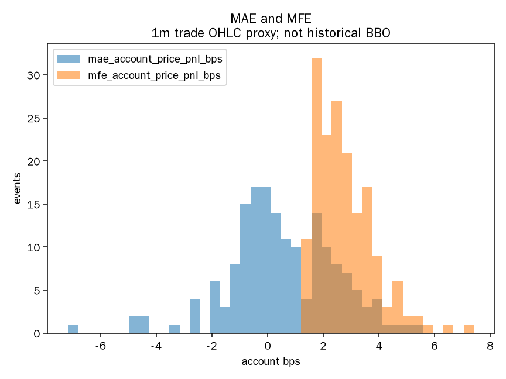
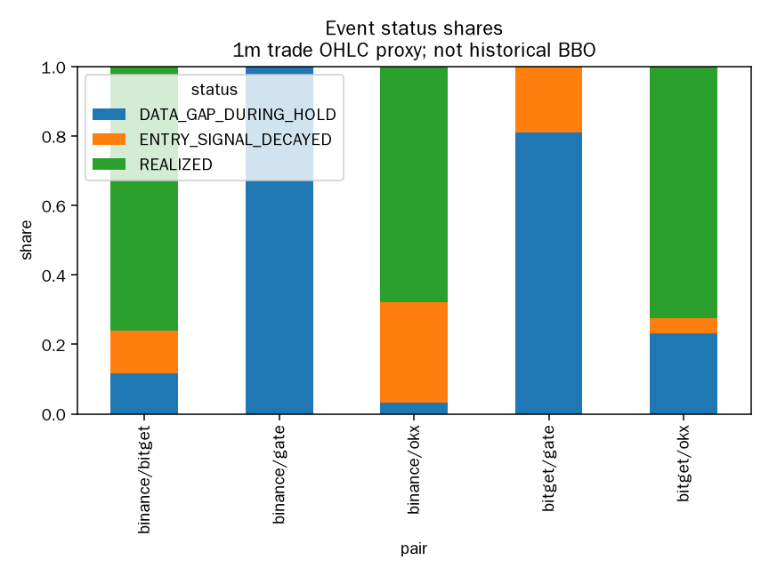
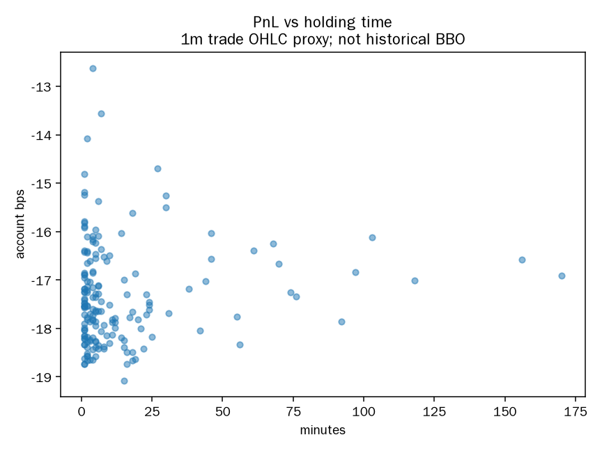
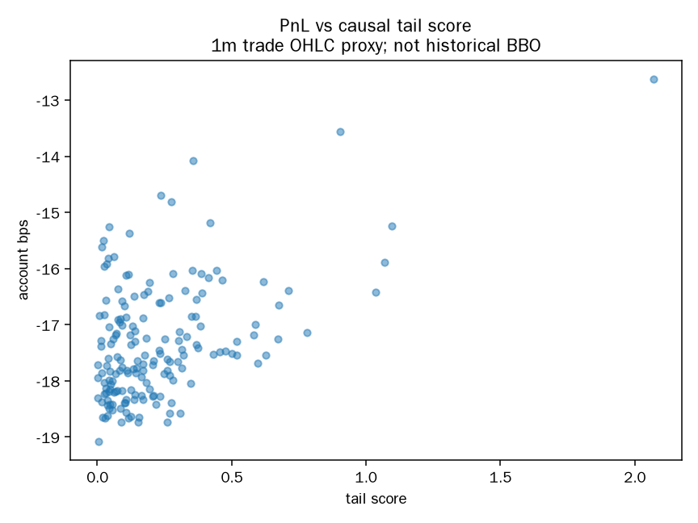
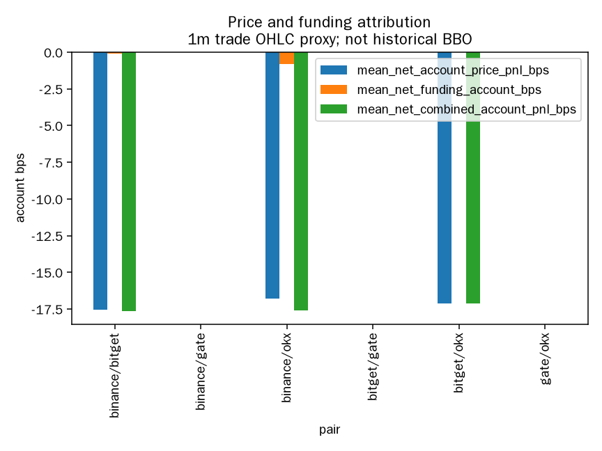
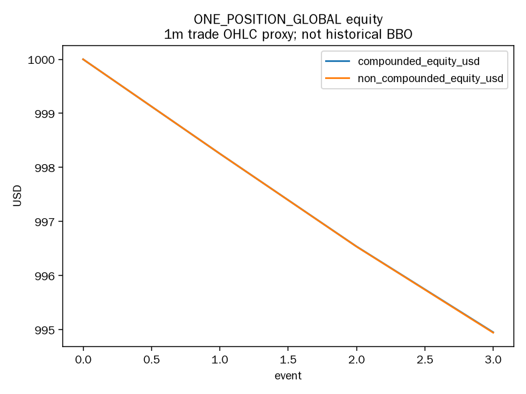
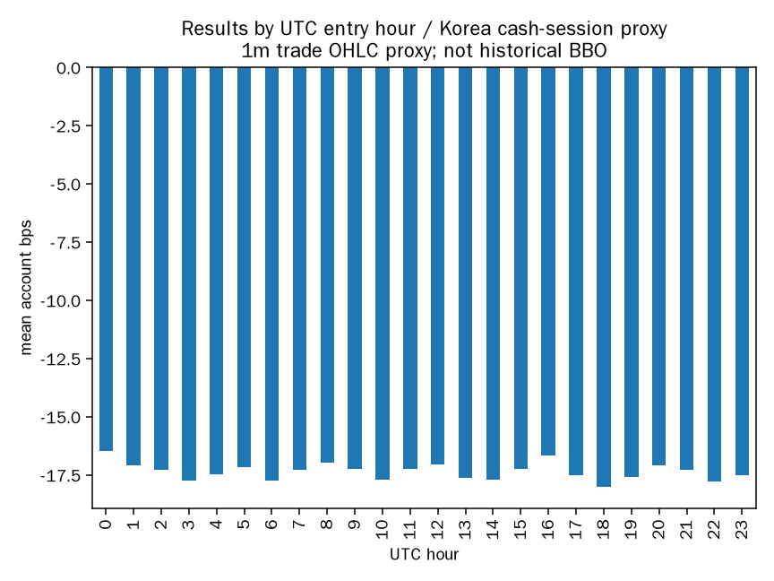